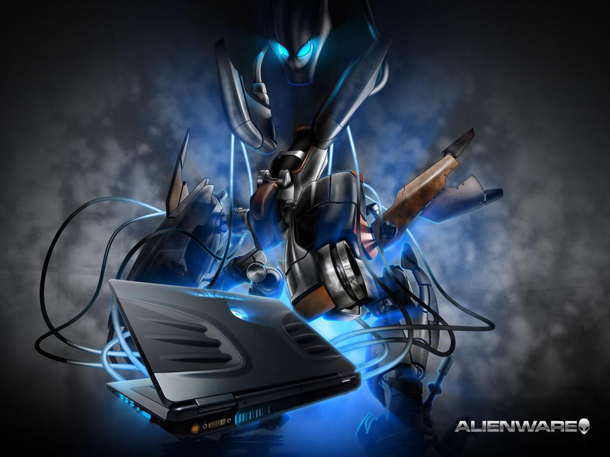

MEJORES LAPTOPS EN LA ACTUALIDAD

ASUS MOTHERSHIP
Asus Mothership es una laptop dedicada al gaming. Si tenemos en cuenta que la pantalla es una FullHD de 17,3 pulgadas con 3 milisegundos de respuesta y 144Hz de tasa de refresco no está nada mal para jugar.
Bajo la pantalla tenemos procesador Intel Core i9-8950HK, gráfica NVidia GeForce RTX 2080, hasta 64GB de RAM y tres unidades SSD de 512GB. La ventilación es uno de los aspectos que Asus más dice haber cuidado. Consta de ocho tuberías de cobre que transfieren el calor a las esquinas donde se disipan gracias a dos ventiladores de 12 voltios. El ROG Mothership pesa 4,7 kilos y tiene un grosor total de 29,9mm.
PREDATOR HELIOS 700
Acer, en su conferencia anual desde Nueva York ha lanzado un auténtico bombazo en el mercado del gaming portatil. Según James Lin, la idea es ofrecer "unos portátiles gaming potentes y asequibles".
Acer Helios 700 utilizará la GPU NVIDIA GeForce RTX 2080 o 2070, siendo este el eje sobre el que girará todo el portátil, ya que como hemos comentado, estará enfocado en el mundo del videojuego. En paralela importancia llevará como procesador el Intel Core i9, uno de los procesadores más potentes del mercado con overclocking. Además, 64GB de RAM DDR4 coronan la composición.
En cuanto a la pantalla, será de 17 pulgadas con IPS FHD y 144hz de ratio de refresco. La respuesta, quizás un poco lenta, será de 3ms con tecnología NVIDIA G-SYNC.
MSI GT76 TITAN
Cualquier que vea las especificaciones de este MSI GT76 Titan no se creería que estamos ante un portátil gaming. Y es que MSI ha creado un demencial portátil que guarda en su interior hardware de un PC de escritorio con todas las de la ley, Intel Core i9-9900K, una Nvidia GeForce RTX 2080, pantalla de 17.3 pulgadas y una tasa de refresco de 144 HZ son sus cualidades para ser uno de los portátiles más potentes jamás construido.
ALIENWARE AREA 51M
Lo primero que destaca en este nuevo portátil gaming de Alienware es su potencia. Para conseguirla cuenta en su interior con especificaciones que generalmente se han reservado para equipos de escritorio. Por ejemplo encontramos un procesador de novena generación Intel Core 19-9900K con ocho núcleos. La memoria RAM asciende a 64 GB y la tarjeta gráfica (aspecto esencial en estos productos) es una Nvidia GeForce RTX 2080 de 8 GB.
La pantalla del Alienware Area-51m alcanza las 17,3 pulgadas de tamaño y viene con un panel IPS a 144Hz. Es un portátil de un tamaño considerable y por lo tanto su peso también lo es, alcanza los 3,8 kilogramos aproximadamente.
ASUS ROG ZEPHYRUS
El revolucionario portátil de gaming ROG Zephyrus es el fruto de la determinación de ROG por innovar constantemente. Aunque es más fino que el resto de portátiles de ROG, lleva el hardware necesario para desafiar a ordenadores de sobremesa de alta gama: gráficos NVIDIA® RTX 2080 con diseño Max-Q, procesador Intel® Core™ de 9ª generación, una pantalla opcional de 144 Hz y Windows 10 Pro. Gracias al nuevo Sistema Aerodinámico Activo (AAS), ROG ha conseguido reducir el grosor del chasis a 16,9-17,9 mm sin renunciar a una refrigeración de vanguardia ni a bajas emisiones de ruido. También incluye un teclado RGB que resultará familiar a los gamers acostumbrados a jugar con PC de sobremesa.